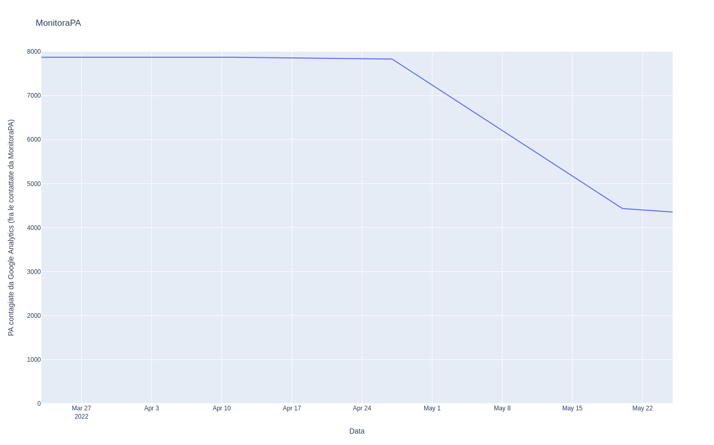

Grazie ! ! !
La comunità di hacker, cittadini e cittadine, attivisti ed attiviste che ha creato MonitoraPA vuole anzitutto ringraziare le 3399 Pubbliche Amministrazioni che dopo la nostra segnalazione hanno rimosso i tracciatori di Google Analytics dai propri siti web istituzionali.
In un paio di settimane, ben oltre il 40% delle PA ha accolto il nostro primo appello alla tutela dei dati, dei diritti e dell'autonomia dei nostri concittadini nonché alla difesa della nostra democrazia da ingerenze indebite ed invisibili.
Sebbene tale rimozione costituisca un dovere etico ancor prima che legale, siamo consapevoli che molte persone hanno dovuto battersi alacremente all'interno delle Pubbliche Amministrazioni per ottenere questo straordinario risultato.
Non a noi, ma a loro, ai dipendenti ed ai consulenti della PA che nonostante tutto continuano a credere nello Stato, va il merito di questa prima vittoria.
Noi hacker possiamo fare domande e cercare risposte (e continueremo a farlo), ma solo i cittadini hanno il potere di cambiare le cose.
Grazie.
Prossimi passi
Sono molti i fronti su cui stiamo lavorando, anche grazie all'apporto di nuove energie che hanno aderito alla nostra comunità.
La scansione di giugno
Monitora PA è un osservatorio automatizzato.
Il primo di giugno avvieremo una nuova scansione delle PA con una versione leggermente migliorata. Abbiamo infatti corretto alcuni bug che avevano causato alcuni falsi negativi durante la prima scansione (siti di PA che inviano dati a Google Analytics, ma che non sono state individuate).
La scansione richiederà alcuni giorni ma, come avvenuto a maggio, tutte le PA che dovessero ancora avere Google Analytics sul proprio sito riceveranno una PEC di segnalazione, firmata da Fabio Pietrosanti (a nome della nostra comunità hacker, di cui è co-fondatore) e dalle diverse associazioni che hanno aderito al nostro progetto.
Contestualmente a tale comunicazione, tutte le PA ancora positive al test, saranno anche oggetto di segnalazione al Garante della Privacy ed al Difensore Civico.
L'osservatorio automatico distribuito
Stiamo riscrivendo il nostro osservatorio automatico in modo da disaccoppiare verifiche e sorgenti dati.
L'obbiettivo è ridurre ad una conoscenza minima di Python le competenze tecniche necessarie per eseguire autonomamente l'osservatorio, non solo sui siti dei dataset di cui disponiamo già, ma su un qualsiasi dataset.
In questo modo, giornalisti, accademici, sindacalisti, insegnanti, studenti e chiunque altro lo desideri potrà eseguire le nostre stesse analisi ed avere una valutazione quantitativa del grado di compromissione cibernetica di qualsiasi insieme di enti, organizzazioni, aziende o personalità pubbliche.
You may stop this individual, but you can't stop us all... after all, we're all alike.
Questa riscrittura ha anche l'obbiettivo di ridurre a poche ore il tempo necessario allo sviluppo di nuove verifiche automatizzate, nonché estenderle ad altri protocolli oltre l'HTTP.
Il nostro osservatorio automatico distribuito è infatti solo uno strumento, progettato per diffondere una cultura cibernetica attiva e politica, capace di creare, usare ed alterare in modo critico e consapevole gli automatismi che ci circondano.
Oltre Google Analytics
Google Analytics è stato solo il primo passo di un lungo cammino.
Abbiamo in programma molte nuove verifiche automatizzate con cui arricchire il nostro osservatorio. Fra queste, in ordine sparso:
- presenza di Google Fonts sul sito
- presenza di Pixel Tracking di Facebook
- errori di configurazione HTTPS
- caselle e-mail istituzionali affidate a fornitori incompatibili con il GDPR
- hosting dei siti web affidati a fornitori incompatibili con il GDPR
- uso di Google Classroom nelle scuole
Le idee sono moltissime e stimolanti sia da un punto di vista tecnico che politico.
Insomma, ci stiamo divertendo un mondo! :-D
Nuove iniziative cibernetiche
Accanto all'osservatorio automatico distribuito, MonitoraPA è impegnata a realizzare strumenti automatici e privacy-friendly per supportare i cittadini nella difesa dei propri diritti cibernetici.
Con l'aiuto dei diversi Data Protection Officer e degli Avvocati che hanno compreso la portata etica e politica della nostra attività cibernetica e ne condividono gli scopi, stiamo preparando alcune piccole pagine web che permetteranno a ogni cittadino di generare, in completa autonomia e senza inviare alcun dato a noi o ad altri, alcune richieste agli enti preposti per esercitare i propri diritti.
In lavorazione abbiamo:
- richiesta di esercizio del diritto di accesso ai sensi dell'art. 15 GDPR, per poter avere informazioni sulle operazioni condotte sui propri dati personali;
- richiesta di esercizio del diritto di oblio ai sensi dell'art. 17 GDPR, per poter ottenere la cancellazione dei propri dati personali trattati in violazione di legge;
- richieste di accesso civico per richiedere documenti, dati o informazioni;
- segnalazione al Garante Privacy, per portare a conoscenza dell'autorità di controllo una situazione di violazione potenziale o attuale della normativa in materia di protezione dei dati personali;
- segnalazioni al Difensore Civico, per portarlo a conoscenza di violazioni potenziali o attuali del CAD o di norme relative a digitalizzazione e innovazione;
Ovviamente questi strumenti saranno accompagnati da how-to e guide per spiegarne l'uso corretto ed i meccanismi di funzionamento.
Nel solco della nostra Costituzione
L'Italia è una Repubblica democratica, fondata sul lavoro.
La sovranità appartiene al popolo, che la esercita
nelle forme e nei limiti della Costituzione.
L'Italia è una Repubblica democratica, fondata sul lavoro.
La sovranità appartiene al popolo, che la esercita
nelle forme e nei limiti della Costituzione.
La libertà e la segretezza della corrispondenza e di ogni altra
forma di comunicazione sono inviolabili.
La loro limitazione può avvenire soltanto per atto motivato
dell'autorità giudiziaria con le garanzie stabilite dalla legge.
La nostra azione cibernetica si muove nel solco della splendida Costituzione della Repubblica Italiana. Esercitiamo pienamente la sovranità che ci appartiene.
Noi facciamo. Politica e Cultura.
Unitevi a noi! ;-)